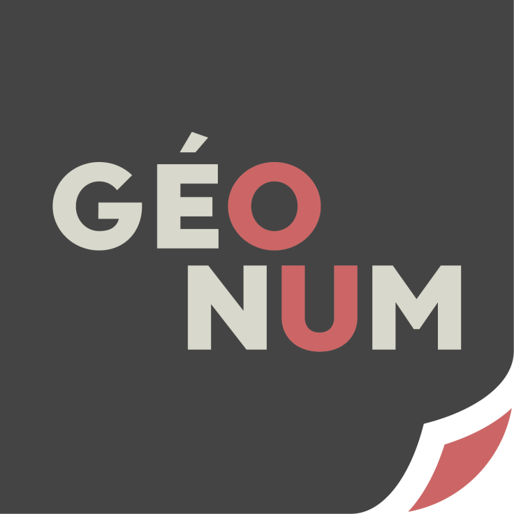

Introduction à GeoServer
2025-12-01
Sommaire
Introduction aux serveurs cartographiques
Les standards OGC
Pourquoi utiliser un serveur cartographique ?
Exemples de serveurs cartographiques
GeoServer
Les serveurs cartographiques
La spécificité du serveur carto
Un serveur cartographique va servir - sans surprise - de la donnée cartographique sous forme de vecteur ou de raster, tuilée ou non. Il le fait selon des standards OGC bien définis comme le WMS (Web Map Service) et le WFS (Web Feature Service) qui vont définir la structure de la donnée récupérée et les interactions possibles avec cette couche de d‘information.

Les standards OGC
Les spécifications OGC suivantes définissent ce qu’on appelle des interfaces (ou API) pour requêter des cartes géoréférencées d’un serveur.
Pas de panique - “interface” est un joli mot pour expliquer comment on doit structurer notre requête et ce qu’on recevra en réponse. Par exemple, quand on commande une glace, on sait qu’il faut indiquer pot ou cornet, le nombre de boules et le parfum de chacune. En échange, on obtiendra une glace bien structurée, prête à être dégustée. Si on veut beaucoup simplifier, l’interface fait le lien entre ce que le client aimerait et ce que le cuisinier peut lui donner en encadrant la question posée par le client et les réponses possibles du cuisinier.
Les standards OGC
Web Map Service (WMS)
La spécification WMS fournit une interface standard pour requêter une image géoréférencée et sa légende. Le client reçoit une image géoréférencée.
C’est le plus couramment utilisé car il est plus rapide que le WFS lorsqu’il s’agit de représenter beaucoup d’éléments.
La requête GetMap permet de récupérer une carte.
La requête GetFeatureInfo permet de récupérer la géométrie et les valeurs d’un pixel.
La requête GetLegendGraphic permet de récupérer la légende.
Source : GeoServer WMS reference - Source : QGISserver WMS reference
Les standards OGC
Web Feature Service (WFS)
La spécification WFS fournit une interface standard pour créer, modifier et requêter de l’information géographique au format vecteur. Le client reçoit de la donnée au format GML.
C’est celui qu’il faut utiliser dans le cas de la manipulation de vecteurs (pour les requêtes attributaires, le WMS suffit).
La requête GetFeature retourne une sélection de features avec leur géométrie et la valeur de leurs attributs.
La requête Transaction permet d’éditer une feature existante en utilisant “create”, “update” ou “delete”.
Source : GeoServer WFS reference - Source : QGISserver WFS reference
Les standards OGC
Web Coverage Service (WCS)
La spécification WCS fournit une interface pour accéder à de la donnée raster. On peut le voir comme le WMS pour du raster.
La requête DescribeCoverage retourne un document XML qui décrit la couverture du pixel sélectionné.
La requête GetCoverage retourne un résultat similaire à la requête GetMap du flux WMS mais avec des extensions additionnelles pour supporter la récupération de données raster.
Source : GeoServer WCS reference - Source : QGISserver WCS reference
Les standards OGC
Web Map Tile Service (WMTS)
La spécification WMTS fournit une interface pour requêter des images tuilées. Il s’agit plus ou moins de la même chose que WMS mais qui permet d’utiliser des couches tuilées.
La requête GetTile retourne une tuile.
La requête GetFeatureInfo permet de récupérer la géométrie et les valeurs d’un pixel (comme dans le cas du flux WMS).
Les standards OGC
Dans ce TP, nous allons utiliser les flux les plus communs : WMS et WFS.
Pourquoi utiliser un serveur carto
Permet de rester à jour - quand la donnée est mise à jour sur le serveur, toutes les applications clientes (comme une application Leaflet ou OpenLayers (OL)) récupèrent aussi la donnée à jour. C’est pratique quand on a une IDG.
Permet de servir de la donnée depuis une base de données PostgreSQL. Au lieu de requêter la donnée en SQL, de l’exporter en JSON et de l’importer dans l’application Leaflet/OL, et de refaire ça à chaque fois que la donnée change, on peut simplement utiliser GeoServer pour générer une couche à partir de SQL.
Permet de gérer et communiquer les métadonnées. GeoServer permet par exemple d’uploader des fiches de métadonnées pour chaque couche qu’il émet.
Les serveurs cartographiques sont au cœur des IDG, il faut donc savoir les utiliser. Par exemple, geOrchestra propose GeoServer comme module de serveur cartographique.
Pourquoi utiliser un serveur carto
En résumé
On peut se passer d’un serveur cartographique quand on a “juste” quelques features en JSON à afficher. Dès qu’on commence à avoir des couches souvent mises à jour, besoin d’accéder aux métadonnées, de plus nombreuses couches, d’importer des couches stylisées dans QGIS, de créer des couches à partir d’une base de données PostgreSQL… dans ce cas l’utilisation d’un serveur cartographique nous facilite grandement la vie.
Exemple 1 : data.grandlyon.com qui permet de lire directement ses couches de données en passant par son API.
Exemple 2 : les fonds de carte OSM (WMS)
Exemples de serveurs cartographiques
MapServer
Plateforme Open Source pour la publication de donnée géospatiale. (J’ai peu de choses à dire dessus, je ne l’ai jamais utilisée).
MapServer continue à exister dans les organisations qui s’en servent déjà mais ce n’est plus forcément la solution la plus populaire lorsqu’il faut partir de zéro.
Exemples de serveurs cartographiques
GeoServer
Serveur Java gratuit et Open Source qui permet aux utilisateurs de visualiser et éditer de la donnée géospatiale. La librairie OpenLayers est intégrée à GeoServer pour générer rapidement des cartes. Les capacités du serveur peuvent être étendues via l’installation d’extensions diverses.
GeoServer est le plus simple à déployer. Il peut aussi directement se connecter avec des bases de données comme PostgreSQL - l’équipe le décrit comme étant “designé pour l’interopérabilité”. GeoServer est assez complexe à configurer mais le plus adaptable aux besoins utilisateur, notamment grâce à la gestion fine des droits utilisateurs et l’utilisation de plugins pour enrichir les possibilités.
Exemples de serveurs cartographiques
QGIS Server
Lien vers QGIS Server Guide Manual
API gratuite et Open Source qui permet aussi d’implanter des éléments cartographiques avancés pour créer des cartes thématiques. Elle fonctionne avec un serveur web (Apache ou Nginx).
QGIS Server est plus difficile à mettre en place (il existe des application tierces pour simplifier son utilisation comme LizMap) mais est le plus compatible avec la publication de projets via QGIS. C’est la meilleure solution pour publier rapidement un projet QGIS.
GeoServer - Introduction
GeoServer est un serveur Open Source écrit en Java qui permet aux utilisateurs de partager et éditer de la donnée géospatiale.
Il a été designé pour maximisé son interopérabilité, permettant de publier de la donnée des sources de données les plus courantes en utilisant des standards ouverts.
GeoServer est un projet développé, testé et soutenu par sa communauté - comme dans le cas de QGIS.
GeoServer est une référence dans l’implementation des standards WFS, WMS et WCS de l’OGC.
Source : hansongis.com/blog/
GeoServer - Introduction
Le projet a débuté en 2001 avec le Open Planning Project (TOPP), un organisme à but non lucratif basé à New York et qui a créé une suite d’outils pour promouvoir la transparence de la donnée. Leur premier outil, GeoServer, avait pour objectif de permettre aux citoyens d’accéder aux documents de planification urbaine du gouvernement en partageant la donnée spatiale.
Avec le temps, le projet GeoTools a été ajouté avec la possibilité de supporter les Shapefiles, les bases de données Oracle, etc.
D’autres projets ouverts ont continué à enrichir GeoServer et ses fonctionnalités comme le développement de PostGIS (par Refractions Reseach) qui a permis de connecter GeoServer à une base de données gratuite (PostgreSQL).
Licence : la GNU General Public License, mais contient aussi des logiciels Apache donc dépend de la Apache Software Foundation ainsi que le la Eclipse Public License, qui sont toutes très permissives.
GeoServer - avantages et inconvénients
Avantages
Solution très bien documentée
Nombreux plugins qui sont bien maintenus
Peut lire de multiple sources de données (shapefile, geopackage, connexion à une base PostgreSQL)
Outil activement maintenu et communauté réactive
Pas difficile à déployer (comparé à d’autres)
Documentation riche
Un outil bien solide sur le long terme
GeoServer - avantages et inconvénients
Inconvénients
Difficile à prendre en main au début (gestion des droits, différencier les couches et les dépôts, etc.)
L’interface est un peu vieille et pas super intuitive
La grande majorité des ressources est uniquement disponible en anglais (mais ça ne devrait pas vous faire trop peur !)
Vous allez parfois vous arracher les cheveux sur des fichiers de style complexes
GeoServer - Comment utiliser la documentation

Formation WebCarto GeoNum 2025-2026